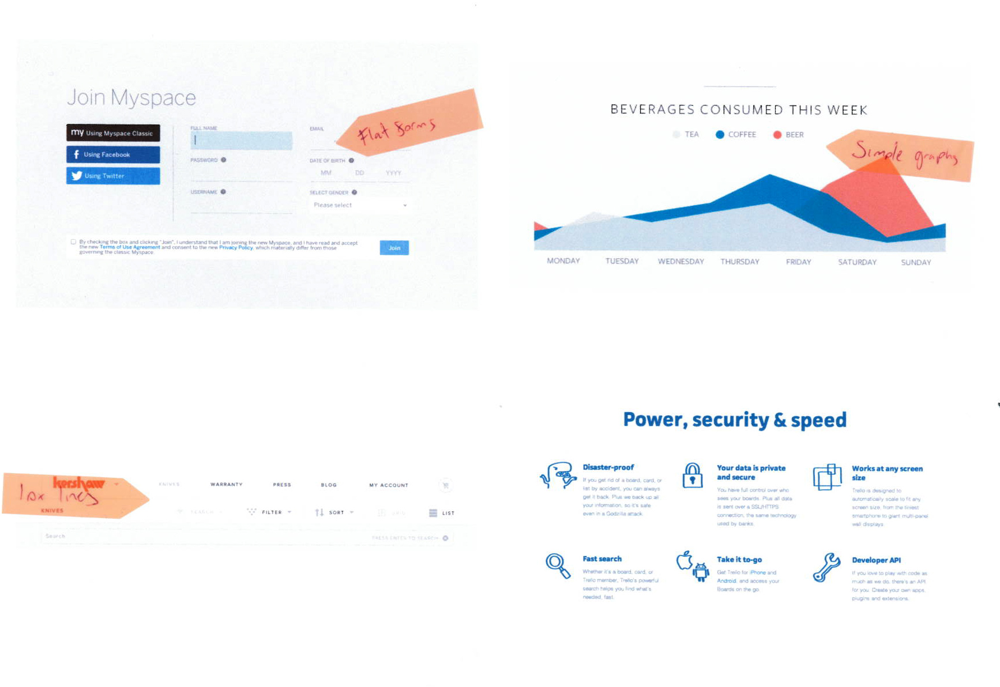

<!-- @include _header -->
<!-- $title Chapter 4: Design -->

<div class="row">
	<div class="w12">
		<header class="section">
			<h1><!-- $title --></h1>
		</header>
		
		<section class="section" id="inspiration">
			<h2>4.1 Inspiration</h2>
			<p>The first stage in the design process was to look at existing apps and trends to get an idea of what a modern, design-focused web application looks like as well as gauging my personal likes and dislikes.</p>
			<p>The essence of the application's success is in it's ability to make the auditing process simpler and quicker for industry professionals - there's no use for the application outside of a work environment. This means that a particularly stylised feel doesn't need to be used as the application doesn't need to have a mass market level of appeal. The styling should be simple and clear in nature with an almost utilitarian feel to it. The flat design style discussed previously fits into this aim very neatly so it makes sense to follow it up.</p>

			<h3>Other web applications</h3>
			<p>A useful way of getting a better idea of the sort of interface components that will be in the application and how the flat style can be applied to them is to research competing applications. Researching into these other applications involves signing up for free accounts and then reviewing the functionality and look and feel. While it would be much more useful if these were direct competitors to my application, the existing tools discussed in the previous chapter don't have a particularly design-focused aesthetic so it was necessary to explore applications which have a similar style to what I'd like to achieve or are based on similar technologies.</p>
			<p>Three of the applications I discovered were particularly interesting:</p>
			<ul>
				<li>Layervault, an application for managing revisions to Photoshop files (<a href="https://layervault.com/">https://layervault.com/</a>)</li>
				<li>Iceber.gs, a Pinterest-like application for collecting design inspiration and ideas (<a href="https://iceber.gs/site">https://iceber.gs/site</a>)</li>
				<li>Basecamp, a project management application (<a href="http://basecamp.com/">Basecamp</a>)</li>
			</ul>
			<p>All of these applications have be designed or redesigned relevantly recently and showcase some aspect of the flat design style discussed previously.</p>

			<h3>Moodboard</h3>
			<figure class="pull-right">
				
				<figcaption>Figure 4-1: The initial moodboard.</figcaption>
			</figure>
			<p>After examining other web applications I decided to create a moodboard to aid in the development of a specific style that could be applied to the application's UI paradigms. Originally I printed off various images of interfaces that had the simple functional style and made a physical collection as shown in figures 4-1, 4-2, and 4-3.</p>

			<figure>
				
				<figcaption>Figure 4-2: Physical moodboard elements.</figcaption>
			</figure>
			<figure>
				
				<figcaption>Figure 4-3: Physical moodboard elements.</figcaption>
			</figure>

			<p>Part way through the process it became apparent that a digital approach would be more useful so I began collecting various interface samples from <a href="http://dribbble.com">Dribbble</a> to create the digital moodboard shown in figure 4-4. Dribbble is a community of designers where images of current work are posted very frequently. The work often features new and experimental styles and techniques so it was the ideal place to research the emerging flat design style.</p>
			<p>The images on the moodboard showcase various elements in the style as well as colours, form and typography:</p>
			<figure>
				<div class="image-grid">
					
					
					
					
					
					
					
					
					
					
					
					
					
					
					
					
					
					
					
					
					
					
					
					
					
				</div>
				<figcaption>Figure 4-4: Digital moodboard. The complete set of images can be viewed on <a href="http://dribbble.com/samlester/buckets/126323-Flat-interface">Dribbble</a>.</figcaption>
			</figure>
			<p>One of the most important things that I discovered in looking at other interface elements is the huge variance in style that can be achieved despite the simple nature of the flat design style. Aside from being functional my application needs to be something that the design-orientated UX designer will want to use. The digital moodboard also showcases a few key features that are essential to the style including sans-serif typography, bright colours and spacious layouts.</p>
			<p>In general web application interfaces tend to be quite information-heavy and part of the chosen style is the simplification of the elements through the liberal use of space, clear colours and large typography. The application that I'm creating will feature a lot of data in the form of page tables, charts and statistical information. It's essential to make sure that this detailed data is being displayed to the user in full while still appearing as clear as possible.</p>
			<p>All of the applications examined above embrace clear sans-serif typography to create a clean, modern look. To increase legibility it's crucial to ensure that text size and spacing is appropriate and there is adequate contrast between the text and it's background (Lidwell, W., Holden, K., &amp; Butler, J., 2010, p. 148).</p>
		</section>

		<section class="section" id="proposed-features">
			<h2>4.2 Proposed features</h2>
			<p>In the previous chapters I discovered lots of different ways in which the app could proceed but it's important to refine and reduce the proposed number of features to ensure that the user can easy accomplish the key tasks (Hoekman, R., 2007, p. 60). This also has the side effect of helping to make the user interface simpler and easier to use by streamlining the number of elements that need to be displayed to the user.</p>
			<p>The following table was created to aid in the task of dividing the initial feature ideas into two categories: essential and nice to have:</p>
			<figure>
				<table>
					<thead>
						<tr>
							<th>Essential</th>
							<th>Nice to have</th>
						</tr>
					</thead>
					<tbody>
						<tr>
							<td>
								<p>Find all the pages of a website based on it's url</p>
								<p>Add annotations to each page</p>
								<p>Export a report showing the results of the content audit</p>
							</td>
							<td>
								<p>Google Analytics integration to return statistics for each page</p>
								<p>Custom report layouts</p>
								<p>Collaboration on projects</p>
							</td>
						</tr>
					</tbody>
				</table>
				<figcaption>Table 4-1: Proposed features table.</figcaption>
			</figure>

			<p>When the three key features (listed in the first column) are designed, built and tested the nice to have features can be considered is they're still deemed relevant to the project.</p>
		</section>

		<section class="section" id="branding-and-promotional-website">
			<h2>4.3 Branding and promotional website</h2>
			<figure class="pull-right">
				
				<figcaption>Figure 4-5: Logo ideas.</figcaption>
			</figure>
			<p>The first thing to do in the branding process was to decide on a name. When discussing potential names with my colleagues at Ten4 Design the name Scoop came about based on the idea that the application 'scoops' information about web pages. Despite not being entirely convinced at first I stuck with it for a few weeks and started experimenting with different fonts for a logotype. The rounded letter forms in the middle of the word Scoop worked well in fonts that had a more geometric feel to them and I eventually settled on Avenir Bold Italic for the font.</p>
			<p>When I was around halfway though the development of the application I began to think about the direction that I could take with the promotional website.</p>
			<figure>
				
				<figcaption>Figure 4-6: Website wireframes.</figcaption>
			</figure>
		</section>

		<section class="section" id="wireframing-and-user-flow-diagrams">
			<h2>4.4 Wireframing and user flow diagrams</h2>
			<p>It's often easier to create the initial layouts by sketching out ideas using pen and paper. The first round of wireframes which were produced focused on the idea of a left hand navigation. <span class="more"></span></p>
			
			

			<p>User flow diagrams. <span class="more"></span></p>
		</section>

		<section class="section" id="concept-designs-and-initial-feedback">
			<h2>5.4 Concept designs and initial feedback</h2>
			<p>From the first round of wireframes and a rough idea of visual direction I created an initial set of designs using Adobe Photoshop. Several key pages were created including the project listing page, project overview page and report creation page aiming to give an overview of the process a user might go through to generate a content audit. The interface is mainly white and grey in colour, using an electric blue for contrast and to attract the user to key actions.</p>
			
			<div class="cycle-slideshow" data-cycle-fx="scrollHorz" data-cycle-slides="> figure" data-cycle-timeout="0" data-cycle-prev=".prev" data-cycle-next=".next" data-cycle-overlay-template="{{slideNum}} / {{slideCount}}">
				<figure>
					
					<figcaption>Concept 1</figcaption>
				</figure>
				<figure>
					
					<figcaption>Concept 2</figcaption>
				</figure>
				<figure>
					
					<figcaption>Concept 3</figcaption>
				</figure>
				<a class="prev" href="#">Previous</a>
				<a class="next" href="#">Next</a>
				<div class="cycle-overlay"></div>
			</div>

			<p>At this early stage in the development of the feature set the exact nature of the tool was hazy so I decided to create a mockup click-through instead of a web-based prototype. As soon as the designs were completed they were presented it to the team at Ten4 for informal feedback. Rather than taking the form of a focus group this round of feedback had a more informal feel with the intention of introducing the research participants to an iterative design cycle where new ideas and designs would be introduced more frequently.</p>
			<p>The overall feedback seemed to be that the application interface was very simple to use.</p>
			<p>Visually, the interface was noted as being somewhat uninspiring </p>
			<p>The end point of the application also came under some scrutiny <span class="more"></span></p>
			<ul>
				<li>Clean but somewhat boring design</li>
				<li>Looks simple to set up audits</li>
				<li>End point not flexible enough</li>
			</ul>
		</section>

		<section class="section" id="revised-design">
			<h2>5.5 Revised designs</h2>
			<p>After the feedback from my concept designs it was clear that significant revisions were needed to make them more fit-for-purpose. At this point I also knew that the application would be built using the Bootstrap framework so it made sense to adapt the layout slightly to suit the framework better.</p>
			<p>New wireframes were created based initially on the Bootstrap horizontal navigation style while still keeping the simplicity of the original design.</p>
			<div class="cycle-slideshow" data-cycle-fx="scrollHorz" data-cycle-slides="> figure" data-cycle-timeout="0" data-cycle-prev="#prev" data-cycle-next="#next" data-cycle-overlay-template="{{slideNum}} / {{slideCount}}">
				<figure>
					
					<figcaption>Concept 1</figcaption>
				</figure>
				<figure>
					
					<figcaption>Concept 2</figcaption>
				</figure>
				<figure>
					
					<figcaption>Concept 3</figcaption>
				</figure>
				<a id="prev" href="#">Previous</a>
				<a id="next" href="#">Next</a>
				<div class="cycle-overlay"></div>
			</div>
			<p>Removing the left navigation allowed for much more room for the content of the sie.</p>
			<figure>
				
				<figcaption>Scoop login</figcaption>
			</figure>
			<figure>
				
				<figcaption>Scoop interface</figcaption>
			</figure>
		</section>

		<a class="next-part" href="<!-- @path implementation.html -->">Chapter 5: Implementation</a>
	</div>
</div>

<!-- @include _footer -->